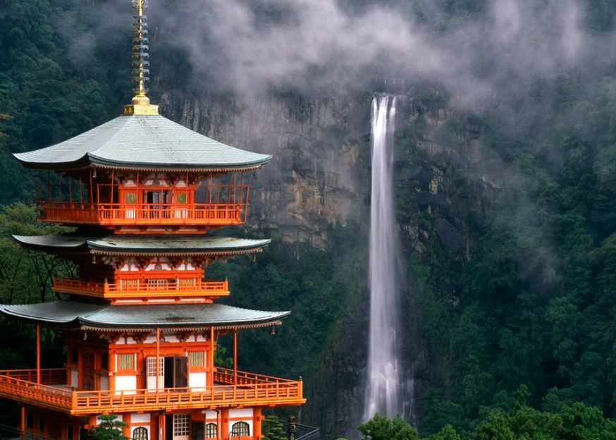
UNESCO WORLD HERITAGE PILGRIMAGE
熊野古道：起死回生之道與太古雲霧
「一千多年的青苔石階、盤根錯節的古杉巨木與神聖溪谷——平安時代上皇與行者在此赤足跋涉，於幽深原始森林中褪去凡塵罪孽，重獲新生。」
The journal of Japanese cultural values
CHAPTER 01 ｜ WAKAYAMA
熊野古道 ｜ 蟻の熊野詣と甦りの聖地
紀伊半島深山靈場・中邊路 600 公里千年古道。
Kii Mountain Range Sacred Sites & Pilgrimage Routes.
聯合國教科文組織世界文化遺產・靈性朝聖巡禮
上皇之泥：傳奇的「蟻之熊野詣」
在平安時代（西元794–1185年）的輝煌暮色中，京都宮廷貴族陷入對「末法思想」的極度恐懼——傳說佛法衰頹，眾生將永墮輪迴無從救贖。為了擺脫此命運，退位上皇、深宮女官與法皇皇族紛紛投身全日本最艱苦的身心苦行——「熊野御幸」。
從西元907年宇多上皇，到一生不惜34次歷經600公里生死翻越紀伊山脈的後白河上皇，皇族紛紛屏棄金碧輝煌的漆輦軟轎，卸下尊貴階級，赤足踏過爛泥、暴漲山溪與水蛭遍布的幽谷。朝聖隊伍在原始雨林中首尾相接、連綿不絕，史官驚嘆宛如「蟻之熊野詣」——蟻群般的信徒虔誠漫步山徑。
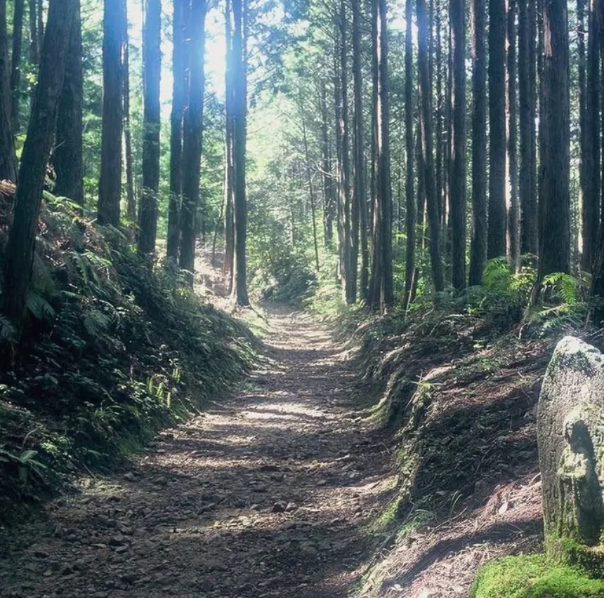
大門坂：全長600公尺青苔石階古道，兩側聳立樹齡800年夫婦杉巨木群，和歌山縣。
哲學意涵：起死回生 (Kishikaisei)
神佛習合的「甦生與輪迴」神髓
不同於西方朝聖紀念單一聖徒的足跡，熊野古道是一場具象化的「死亡與再生」儀式。險峻崇山象徵死後極樂淨土（補陀落）。當行者翻越中邊路刀削般的險峻山脊，浸入湯之峰滾燙的硫磺泉水時，即被視為在肉體上經歷洗滌死亡；而後於熊野本宮大社破繭而出，以純淨靈魂重返人世。
CHAPTER 02 ｜ YUNOMINE TSUBOYU & OYUNOHARA
小栗判官傳奇 ＆ 七色變幻靈泉
這份「甦生」的神話在湯之峰溫泉最為歷歷在目。14世紀武將小栗判官遭未婚妻之父毒害，全身潰爛化為無目無足的餓鬼之軀。其摯愛照手姬以木車拉著他枯槁的身軀，長途跋涉數百里抵達熊野山谷。
抵達湯之峰後，當地的山伏修驗者將小栗安置於滾燙沸騰的「壺湯」之中。經過連續四十九天浸泡在每日色彩變換七次的靈泉中，毒素自骨髓逼出，雙眼重見光明，肌膚完好如初。時至今日，旅人依然浸泡在同一座溪谷石艙中，吸吮著守護行者1,800年的神聖地熱蒸氣。
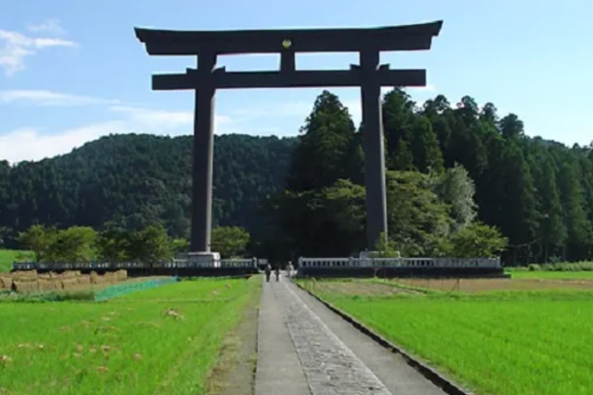
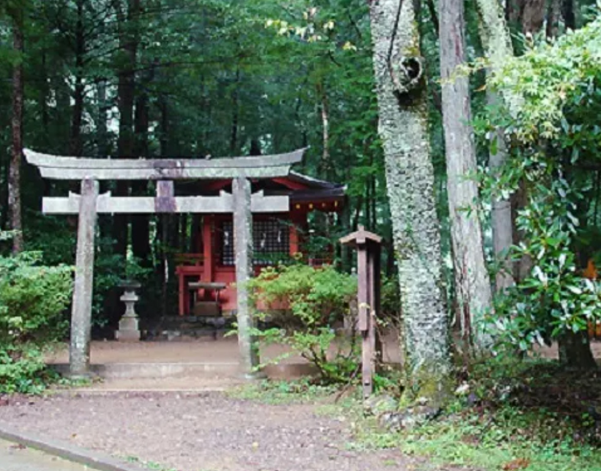
The journal of Japanese cultural values
MICHELIN ★★ ｜ WAKAYAMA

VILLA AiDA
和歌山県岩出市
ヴィラ・アイーダ
MICHELIN GASTRONOMY
大地餐桌・微型風土 ｜ 岩出市 Villa AiDA
小林寬司主廚在賓客入席數分鐘前，親手採摘百種有機香草與時蔬。紀之川河谷的微風、冷壓柑橘油與山林野味，交織成一首盤中詩篇。
招牌：30種大地時蔬馬賽克佐黑潮海鹽
交通：和歌山站專車自駕約40分鐘
CAFE & SOBA ｜ HONGŪ TRAIL
YAMABUSHI SOBA & CAFE
和歌山県田辺市本宮
山伏そば 拝庵・古道茶屋
ARTISAN CAFE & DINING
傳承高山手打蕎麥 ＆ 森林茶屋 ｜ 田邊市本宮
由中邊路山伏修驗僧親自打理。選用高海拔火山梯田培育的古種蕎麥，以神聖山泉水親手揉製與手沖烘焙咖啡，在靜謐禪意僧坊中品味純粹。
招牌：石臼現磨十割蕎麥 ＆ 山泉手沖珈琲
交通：緊鄰熊野本宮古道廊道旁
LUXURY HOTEL ｜ SHIRAHAMA & KATSUURA

HOTEL KAWAKYU
和歌山県白浜町
ホテル川久・碧き島の宿
LUXURY SANCTUARY
南紀白濱海岸・海崖宮殿名宿 ｜ ホテル川久
由世界頂級工藝大師傾力打造的私人海岸宮殿，大廳貼滿22K金箔天花板，收藏達利真跡。皇家海景套房配備直面太平洋的私人露天溫泉風呂。
設施：特大套房 ｜ 私人溫泉 ｜ 米其林極上盛宴
車程：距南紀白濱機場（SHM）僅15分鐘
行程規劃
DAY 01
大阪關西機場 ➔ 田邊門戶 ➔ 高原「霧之里」雲端聚落
搭乘專屬包車自關西機場或田邊站出發。抵達瀧尻王子——此處為劃分凡塵與神域之界線。沿陡峭老杉樹根石階攀登至高原聚落（約2.5小時，3.7公里）。入住海崖山莊，在凝望果無山脈暮色中享用在地時令有機晚餐。
DAY 02
發心門王子 ➔ 熊野本宮大社 ➔ 湯之峰「壺湯」起死回生
晨間專車前往發心門王子。漫步於穿過傳統茶園的平緩下坡山徑，抵達熊野本宮大社與高達34公尺的大齋原日本第一大鳥居。於「手打蕎麥 山伏坊」品味米其林十割蕎麥。午後前往湯之峰溫泉享受30分鐘「壺湯」神聖淨身。
DAY 03
熊野川平底木舟 ➔ 大門坂古杉石階 ➔ 那智大瀑布 ＆ 勝浦漁港
搭乘90分鐘傳統平底木造小船沿熊野川峽谷順流而下，參拜熊野速玉大社。專車前往大門坂換穿平安貴族華服，登高參拜熊野那智大社與落差133米的那智瀑布。最後於勝浦漁港品嚐新鮮未冷凍太平洋藍鰭金槍魚。
The journal of Japanese cultural values
2026.04.18

MOUNT FUJI & MOTOSU
山梨県富士河口湖町
富士五湖・本栖湖
PICK UP
富士五湖與本栖湖：神聖逆富士、山野柴火與深山靜謐。
本栖湖如鏡水面映照著永恆對稱的逆富士，探訪虹夕諾雅富士露營木屋與甲州獵人法式野味割烹...
2026.04.12
YAKUSHIMA ISLAND
鹿児島県熊毛郡屋久島町
屋久島・太古の縄文杉
PICK UP
屋久島：七千年繩文杉、白谷雲水峽與太古苔蘚秘境。
走入《魔法公主》取景的翠綠苔蘚森林，下榻世界自然遺產海崖別墅 sankara hotel & spa 屋久島...
2026.03.29
BESPOKE CHARTER
日本全国・専用車旅
旅人の特等席・包車
PICK UP
旅人の特等席：日本客製化 Alphard 專車與自駕安全指南。
華人司導到府接送、跨宿行李直送與 ToCoo! 全日本租車 0 自負額保險比價，自在探索秘境山海...
2026.03.15

CULTURAL RANKINGS
京都宇治・全国名湯
日本百選・抹茶と温泉
COLLABORATION
日本名物百選：百年宇治抹茶老舖 50 選與秘湯溫泉大賞。
嚴選京都宇治、淺草、鎌倉與九州 50 間茶道名店，以及此生必住的一泊二食絕景露天風呂名宿...

UNESCO WORLD HERITAGE CULTURAL SANCTUARY
富士五湖與本栖湖：神聖逆富士、山野柴火與深山靜謐
「本栖湖如鏡水面映照著永恆對稱的逆富士，柴火劈啪的溫暖氣息與神聖高原清冽空氣交織——走入千年富士講行者的火山朝聖之境。」
The journal of Japanese cultural values
CHAPTER 01 ｜ YAMANASHI
富士五湖と本栖湖 ｜ 富士講信仰と逆さ富士の聖域
山梨縣富士山麓・五大冰川堰塞湖巡禮。
Fujisan, Sacred Place and Source of Artistic Inspiration.
從敬畏天災到靈性崇拜・世界文化遺產
富士講信仰與五湖冰川聖域
一千多年來，富士山並非文人畫卷中溫柔的背景，而是隨時噴薄毀滅怒火的活火山。西元864年的「貞觀大噴發」湧出無盡玄武岩漿，將古老的剗之海一分為二，雕塑出今日的本栖湖、精進湖與西湖，更在熔岩之上孕育出深邃神秘的青木原樹海。
進入江戶時代，修驗行者長谷川角行於富士山麓的人穴洞窟苦修，將對大自然的原始恐懼轉化為深邃的靈性崇拜，開創「富士講」信仰。信徒身著白衣，在攀登山頂前必先巡禮五大冰川湖泊進行「內八海禊行」——在破曉時分立於本栖湖冰冽澄澈的水岸，凝望毫無漣漪的湖面浮現完美的「逆富士」神影。

本栖湖破曉：日幣舊版千圓鈔背面取景地，水深達121.6公尺的五湖第一深邃透明之境，山梨縣。
自然美學：青木ヶ原樹海と熔岩洞穴
玄武岩苔原上的太古呼吸
踏入僅有1,200年歷史的青木原樹海，檜木與鐵杉的盤根緊緊抓附於多孔質黑色玄武岩上。這座能吸收一切聲響的翠綠苔蘚森林深處，隱藏著終年零度的「鳴澤冰穴」與「富岳風穴」——火山烈焰與萬年玄冰在此共生，見證日本列島大地的原始脈動。
CHAPTER 02 ｜ HIGHLAND HEARTH & GLAMPING
赤松林間的柴火哲學与朝霧獨木舟
當代旅人不再止步於匆促的河口湖打卡，而是走入海拔900公尺的赤松林與本栖湖西岸。清晨五點，乘著加拿大獨木舟滑入籠罩淡藍色晨霧的本栖湖心，在萬籟俱寂中獨享整座靈峰由黛青轉為胭脂紅的「赤富士」瞬間。
入夜後，高原氣溫驟降，赤松林間燃起溫暖營火。主廚以富士山麓狩獵的天然夏鹿與秋熊，搭配甲州百年酒莊釀造的生物動力法白葡萄酒，在劈啪作響的柴火餘燼中，重現甲斐國山岳民族與自然共生的野性饗宴。
The journal of Japanese cultural values
MICHELIN PEDIGREE ｜ KAWAGUCHIKO

RESTAURANT TOYOSHIMA
山梨県富士河口湖町
レストラン トヨシマ
MICHELIN GASTRONOMY
甲州獵人法式野味割烹 ｜ レストラン トヨシマ
身兼持證獵人的主廚豐島雅也親自入山狩獵富士山麓野生日本鹿，以低溫柴火慢烤鎖住純淨肉汁，佐以富士五湖山菜與甲州私房陳年葡萄酒。
招牌：富士山麓炭火慢烤野生本州鹿佐山葡萄醬
交通：河口湖站專車約8分鐘（完全預約制）
CAFE & LOCAL CUISINE ｜ FUJI FIVE LAKES
CISCO COFFEE & HŌTŌ
山梨県富士河口湖町
シスコ珈琲 ＆ ほうとう茶屋
ARTISAN CAFE & DINING
湖畔精品手沖珈琲 ＆ 雲朵鐵鍋餺飥 ｜ 河口湖畔
於河口湖畔 CISCO COFFEE 品味以富士山伏流水沖煮的舊金山淺焙精品咖啡與手作起司蛋糕；午間造訪保坂猛設計的純白雲朵建築「ほうとう不動」，享用滾燙甲州味噌南瓜餺飥。
招牌：富士伏流水手沖單品 ＆ 鐵鍋熟成南瓜餺飥
交通：河口湖南岸八木崎公園旁
LUXURY HOTEL ｜ HOSHINOYA & UBUYA
HOSHINOYA FUJI
山梨県富士河口湖町大石
星のや富士・湖山亭うぶや
LUXURY SANCTUARY
赤松森林露營木屋 ＆ 逆富士露天風呂 ｜ 星のや富士
日本首座奢華露營度假村「虹夕諾雅 富士」，極簡混凝土艙體懸挑於河口湖100公尺高坡，房內專屬暖爐露台直面富士山；或下榻「湖山亭產屋」獨享無遮蔽逆富士私湯。
設施：營火交誼廳 ｜ 森林早餐盒 ｜ 富士山景私人露天溫泉
車程：距河口湖站專車約15分鐘
行程規劃
DAY 01
東京專車直達 ➔ 新倉山淺間公園五重塔 ➔ 河口湖畔私湯宿坊
搭乘專屬 Alphard 包車自東京出發，登臨新倉山淺間公園眺望忠靈塔與富士山同框絕景。午後於 CISCO COFFEE 湖畔品嚐手沖咖啡，傍晚入住虹夕諾雅富士或湖山亭產屋。
DAY 02
本栖湖破曉獨木舟 ➔ 青木原樹海與富岳風穴 ➔ TOYOSHIMA 野味晚宴
破曉前往本栖湖體驗晨霧獨木舟，親眼見證千圓日鈔背面的「逆富士」。午後由專業嚮導帶領漫步青木原樹海苔原與萬年冰穴，晚間於 Restaurant TOYOSHIMA 享用米其林級法式獵人鹿肉料理。
DAY 03
北口本宮富士淺間神社千年巨杉參道 ➔ 忍野八海湧泉 ➔ 賦歸東京
晨間參拜富士講起點「北口本宮富士淺間神社」，穿行於樹齡逾千年的太郎杉神木群下。隨後探訪忍野八海清澈湧泉與「ほうとう不動」雲朵建築午餐，午後搭乘專車或富士回遊號返回新宿。
The journal of Japanese cultural values
2026.04.24

KUMANO KODŌ
和歌山県田辺市・那智勝浦
熊野古道・甦りの聖地
PICK UP
熊野古道：千年朝聖古道、靈泉甦醒與神聖森林之霧。
踏上平安時代上皇赤足跋涉的「蟻之熊野詣」，探訪米其林二星 Villa AiDA 與湯之峰壺湯...
2026.04.12
YAKUSHIMA ISLAND
鹿児島県熊毛郡屋久島町
屋久島・太古の縄文杉
PICK UP
屋久島：七千年繩文杉、白谷雲水峽與太古苔蘚秘境。
走入《魔法公主》取景的翠綠苔蘚森林，下榻世界自然遺產海崖別墅 sankara hotel & spa 屋久島...
2026.03.29
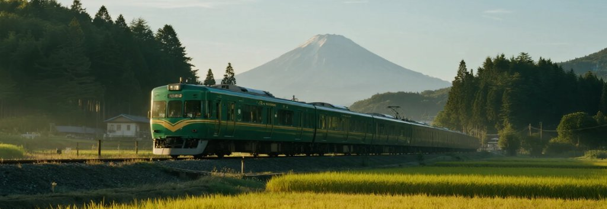
SCENIC RAILWAY
日本全国・観光特急
夢幻の観光列車図鑑
COLLABORATION
穿梭在山巒、峽谷與海景之間的浪漫：全日本 51+ 觀光列車。
從九州「由布院之森」、近鐵「志摩之風」到富士回遊特急，收錄全國 JR Pass 與新幹線預訂指南...
2026.03.15
CULTURAL RANKINGS
京都宇治・全国名湯
日本百選・抹茶と温泉
COLLABORATION
日本名物百選：百年宇治抹茶老舖 50 選與秘湯溫泉大賞。
嚴選京都宇治、淺草、鎌倉與九州 50 間茶道名店，以及此生必住的一泊二食絕景露天風呂名宿...
UNESCO WORLD NATURAL HERITAGE SANCTUARY
屋久島：七千年繩文杉、白谷雲水峽與太古苔蘚秘境
「『一個月下三十五天的雨』——太平洋水氣撞擊海拔近兩千公尺的洋上阿爾卑斯花崗岩峰，孕育出樹齡七千年的神木巨杉與六百種翠綠苔蘚交織的太古星系。」
The journal of Japanese cultural values
CHAPTER 01 ｜ KAGOSHIMA
屋久島 ｜ 縄文杉と白谷雲水峡の太古林
鹿兒島縣大隅群島・日本首座世界自然遺產。
Primeval Cedar Forests & Subtropical Oceanic Peaks.
日本首座世界自然遺產・洋上阿爾卑斯聖域
一個月下三十五天的雨：花崗岩隆起的千年屋久杉
在鹿兒島南端外海60公里處，屋久島以近乎正圓的姿態自黑潮暖流中拔地而起，島中央聳立著九州最高峰——海拔1,936公尺的宮之浦岳。作家林芙美子在《浮雲》中寫道：「屋久島一個月下三十五天的雨。」豐沛的水氣在花崗岩貧瘠山脊上凝結成霧，使杉木生長極度緩慢、樹脂含量極高，造就了千年不腐的「屋久杉」。
在屋久島，唯有樹齡超過一千年的巨木方能被尊稱為「屋久杉」。江戶時代以前，島民視深山巨木為神明居所（岳參信仰），不敢揮斧；直至薩摩藩將富含油脂的屋久杉木瓦（平木）列為幕府年貢，森林裡留下了三百年前的巨大樹樁——而新一代幼杉竟在古老樹樁頂端破繭而生，形成世代傳承的「二代杉」生命奇蹟。為免舟車勞頓，造訪深山太古苔林推薦提早預訂 Klook 屋久島私人包車 或報名 白谷雲水峽一日遊行程，由專車與專業嚮導帶路最為安心。
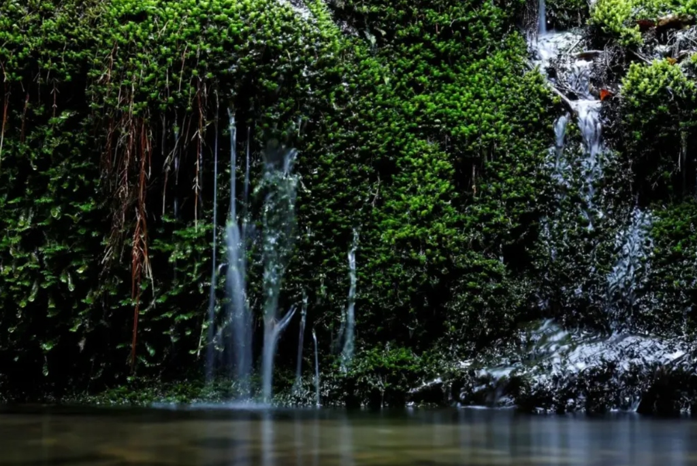
白谷雲水峽「苔むす森」：海拔800公尺雲霧林帶，宮崎駿《魔法公主》靈感起源地，鹿兒島縣屋久島。
自然哲學：萬物有靈的苔蘚宇宙
白谷雲水峽與「威爾森樹樁」的心形蒼穹
日本全國約有1,600種苔蘚，而僅僅在屋久島一地便棲息著超過600種。當陽光穿透白谷雲水峽的晨霧，無數懸掛在苔尖的水珠如綠寶石般折射微光。沿荒川森林鐵道深入海拔1,300公尺處，走進豐臣秀吉時代留下的巨大中空樹樁「威爾森株」仰望天空，樹洞與天光恰好交織成一枚完美的心形。
CHAPTER 02 ｜ HIRAUCHI KAICHŪ ONSEN
潮汐雕琢的平內海中溫泉 ＆ 千尋瀑布
從海拔兩千公尺的寒帶竹林下山，短短數十分鐘車程即抵達榕樹氣根垂掛的亞熱帶海岸。在島嶼南端的「平內海中溫泉」，地熱硫磺泉自太平洋潮間帶的礁岩裂隙湧出——每天僅在退潮前後兩小時露出海面，旅人浸於天然岩盤湯池中，耳畔即是拍岸巨浪。
花崗岩整座島嶼無法留住礦物質，使屋久島溪水成為硬度接近零的「超軟水」。無論是用來沖泡屋久島有機深蒸茶、手沖森林烘焙咖啡，或是釀造傳奇芋燒酎「三岳」，都帶有一抹甘冽如絲絨般的圓潤尾韻。
The journal of Japanese cultural values
MICHELIN PEDIGREE ｜ YAKUSHIMA
SANKARA — OKAS
鹿児島県熊毛郡屋久島町
サンカラ・オーカス
MICHELIN GASTRONOMY
島嶼風土法式極上晚宴 ｜ sankara okas（オーカス）
由法式名廚武井智春監修，以「地產千消」為哲學，將屋久島近海現捕飛魚、首折鯖生魚片、屋久鹿里肌與島產桶柑，化作星級法式藝術饗宴。
招牌：屋久島飛魚法式凍派 ＆ 炭烤屋久鹿佐桶柑醬
交通：屋久島機場往南車程約40分鐘（麥生高台）
CAFE & ROASTERY ｜ ANBŌ RIVER
SMILEY & NOMAD CAFE
鹿児島県屋久島町安房
スマイリー珈琲・渓流茶屋
ARTISAN CAFE & BAKERY
安房川翡翠溪流露台珈琲 ＆ 島茶屋 ｜ 安房・宮之浦
座落於安房川畔木造露台的 Smiley Cafe 與山腰 Nomad Cafe，以屋久島千年花崗岩過濾的「超軟水」手沖自烘咖啡，搭配天然酵母百香果吐司與屋久杉燻製起司。
招牌：超軟水手沖森林深焙珈琲 ＆ 桶柑戚風蛋糕
交通：安房港步行約5分鐘・俯瞰翡翠色安房川
LUXURY VILLA ｜ SANKARA HOTEL & SPA
SANKARA HOTEL & SPA
鹿児島県熊毛郡屋久島町麦生
サンカラホテル＆スパ屋久島
LUXURY SANCTUARY
上天賜予的隱世海崖別墅 ｜ sankara hotel & spa 屋久島
梵語「sankara」意為天賜之禮。僅設29間獨立木造別墅與套房，背倚愛子岳原始雨林、前擁太平洋無邊際泳池，專屬管家為旅人準備登山裝備與阿育吠陀森林 SPA。
設施：無邊際海景泳池 ｜ 專屬登山管家 ｜ 森林草本 SPA
服務：屋久島機場＆安房港免費專屬禮賓車接送
行程規劃
DAY 01
鹿兒島直航 ➔ 安房川翡翠溪谷獨木舟 ➔ sankara 海崖別墅晚宴
自鹿兒島搭乘高速船或直飛航班抵達屋久島。午後於安房川平靜溪流划行透明獨木舟，在 Smiley Cafe 品嚐超軟水手沖咖啡；傍晚入住 sankara hotel & spa 屋久島享用 okas 法式晚宴。
DAY 02
荒川登山口森林鐵道 ➔ 威爾森心形樹樁 ➔ 七千年「繩文杉」朝聖
破曉由專屬登山嚮導陪同自荒川登山口出發，沿百年森林小火車木棧道前行，穿越大王杉、夫婦杉與威爾森心形樹樁，最終仰望樹幹周長16.4公尺的太古神木「繩文杉」。
DAY 03
白谷雲水峽《魔法公主》苔蘚森林 ➔ 千尋瀑布 ➔ 平內海中溫泉
晨間漫步於白谷雲水峽600種翠綠苔蘚覆蓋的溪谷與太鼓岩展望台。午後環島造訪花崗岩巨壁傾瀉而下的千尋瀑布，算準退潮時刻浸泡太平洋岸邊的「平內海中溫泉」。
The journal of Japanese cultural values
2026.04.24
KUMANO KODŌ
和歌山県田辺市・那智勝浦
熊野古道・甦りの聖地
PICK UP
熊野古道：千年朝聖古道、靈泉甦醒與神聖森林之霧。
踏上平安時代上皇赤足跋涉的「蟻之熊野詣」，探訪米其林二星 Villa AiDA 與湯之峰壺湯...
2026.04.18
MOUNT FUJI & MOTOSU
山梨県富士河口湖町
富士五湖・本栖湖
PICK UP
富士五湖與本栖湖：神聖逆富士、山野柴火與深山靜謐。
本栖湖如鏡水面映照著永恆對稱的逆富士，探訪虹夕諾雅富士露營木屋與甲州獵人法式野味割烹...
2026.03.29
SCENIC RAILWAY
日本全国・観光特急
夢幻の観光列車図鑑
COLLABORATION
穿梭在山巒、峽谷與海景之間的浪漫：全日本 51+ 觀光列車。
從九州「由布院之森」、「指宿玉手箱」到近鐵「志摩之風」，收錄全國 JR Pass 與新幹線預訂指南...
2026.11.04
KOBE BAR NAKANAKA
沖縄県那覇市久茂地
神戸Bar 仲々・二大銘牛
NEW FEATURE
神戶Bar 仲々：那霸久茂地暖簾後的A5神戶牛與石垣牛奢華雙重奏。
推開那霸久茂地靜巷裡的深色木門與「仲々」暖簾，一次品嚐血統證書A5神戶牛與特撰石垣牛夏多布里昂...
OKINAWA FINE DINING & DUAL WAGYU MASTERCLASS
神戶Bar 仲々 (Kobe BAR NAKANAKA)：那霸久茂地隱世暖簾後的神戶牛與石垣牛極致雙重奏
「推開那霸久茂地靜巷裡的深色木門與『仲々』黑暖簾，血統純正的日本兵庫A5神戶牛與八重山特撰石垣牛在此交會——在備長炭與鑄鐵盤的滋滋聲響中，品味大人專屬的深夜奢華食堂。」
The journal of Japanese cultural values
CHAPTER 01 ｜ NAHA KUMOJI
神戸Bar 仲々 ｜ 神戸牛と石垣牛、二大銘牛の邂逅
沖繩縣那霸市久茂地・大人隱密炭火鐵板酒場。
Kobe Beef & Ishigaki Beef Culinary Hideaway in Naha, Okinawa.
隱身那霸都會靜巷・饕客私藏的和牛聖殿
當世界頂級「神戶牛」遇見南國至寶「石垣牛」
在沖繩那霸市中心最繁華的國際通與單軌電車「縣廳前站」、「美榮橋站」交會處，轉入久茂地（Kumoji）靜謐的街巷，喧囂的人潮瞬間被隔絕於身後。一扇低調內斂的碳化木門前，垂掛著印有白色「仲々」字樣的深黑暖簾；門前小黑板上以粉筆手寫著當晚令老饕屏息的菜單——「特撰石垣牛 サーロイン・フィレ」與「特撰神戸牛 サーロイン・フィレ」。
這正是沖繩極少數能同時品嚐「日本兵庫縣正統A5神戶牛」與「沖繩八重山特撰石垣牛」的大人系隱世酒場——神戸Bar 仲々 (Kobe BAR NAKANAKA)。不同於一般喧鬧的觀光燒肉店，仲々以溫潤木質調、微醺琥珀燈光與高隱私感的板前及包廂座席，打造出宛如東京銀座或神戶北野坂私房割烹的靜謐氛圍。無論是自駕旅途尾聲的慶祝晚宴，或是深夜想小酌一杯配極上牛排的成熟旅人，都能在此找到最純粹的味覺感動。
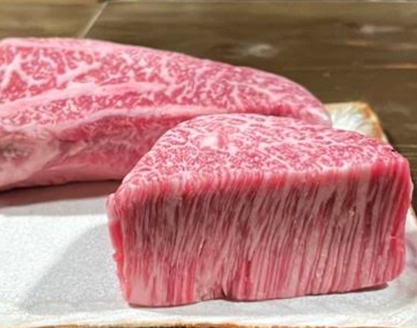
左圖：那霸市久茂地「神戸Bar 仲々」低調沉穩的木造門面與手寫黑板菜單。右上：入鍋炙烤前由主廚端上桌展示的 A5 等級特撰神戶牛與石垣牛厚切菲力（夏多布里昂）及沙朗原塊。
料理哲學：二大銘牛食べ比べ (Dual Wagyu Tasting)
細雪霜降與南島甘甜脂香的味覺對話
為什麼在沖繩要同時品嚐神戶牛與石垣牛？「神戶牛」源自純血但馬牛，其大理石紋油花（霜降り）細密如冬日初雪，不飽和脂肪酸熔點極低，甫入口中便化為絲綢般的芳醇甘露；而「石垣牛」則在八重山群島溫暖海風與富含礦物質的牧草滋養下成長，紅肉纖維緊緻柔嫩、肉汁濃郁且尾韻清爽不膩。在「仲々」同桌對比品嚐兩大銘牛的沙朗（Sirloin）與菲力（Fillet），堪稱日本和牛美學的最高享受。
CHAPTER 02 ｜ CHARCOAL SEAR & OKINAWA SEA SALT
外酥內緋紅的火候藝術：海鹽、山葵與微醺之夜
在「神戸Bar 仲々」，每一塊厚切牛排在料理前都會先呈現在賓客眼前——粉嫩紅肉間交織著藝術品般的雪白霜降紋理。主廚以精準高溫將牛排表面瞬間封煎出誘人的梅納反應焦香外殼，內裡則完美保留如紅寶石般閃耀的五分熟（Medium Rare）粉紅切面，再鋪於鋪滿鮮甜沖繩洋蔥絲的滾燙鑄鐵盤上端出。
第一口建議不沾任何醬汁，僅輕蘸一撮富含海洋礦物質的「沖繩天然海鹽」或搭配現磨山葵（Wasabi）。海鹽的微鹹瞬間提亮了和牛油脂的甘甜，而洋蔥絲在吸收了神戶牛與石垣牛滴落的琥珀色肉汁後，更化作令人欲罷不能的人間美味。餐前搭配一碗清爽脆口的沖繩季節鮮蔬沙拉、手作豆腐與醋漬海蘊，再佐以冰鎮 Orion 生啤酒、精選紅酒或沖繩古酒泡盛，每一口都是無可挑剔的平衡。
The journal of Japanese cultural values
SIGNATURE STEAK ｜ KOBE & ISHIGAKI
DUAL WAGYU TASTING
特撰神戸牛 × 特撰石垣牛
極上ステーキ食べ比べ
MASTERCHEF RECOMMENDATION
特撰神戶牛 ＆ 特撰石垣牛 沙朗／菲力對比饗宴
店內最高人氣點法！建議兩人同行各點一份 100g「特撰石垣牛」與「特撰神戶牛」（可選油花豐潤的サーロイン沙朗，或極致柔嫩的フィレ菲力），一次完成日本兩大傳奇和牛的奢華盲測對比。
必點部位：特撰石垣牛菲力・特撰神戶牛沙朗 (100g~)
佐料搭配：沖繩天然海鹽、現磨山葵、秘製蒜香牛排醬
APPETIZER & BAR ｜ OKINAWA TERROIR
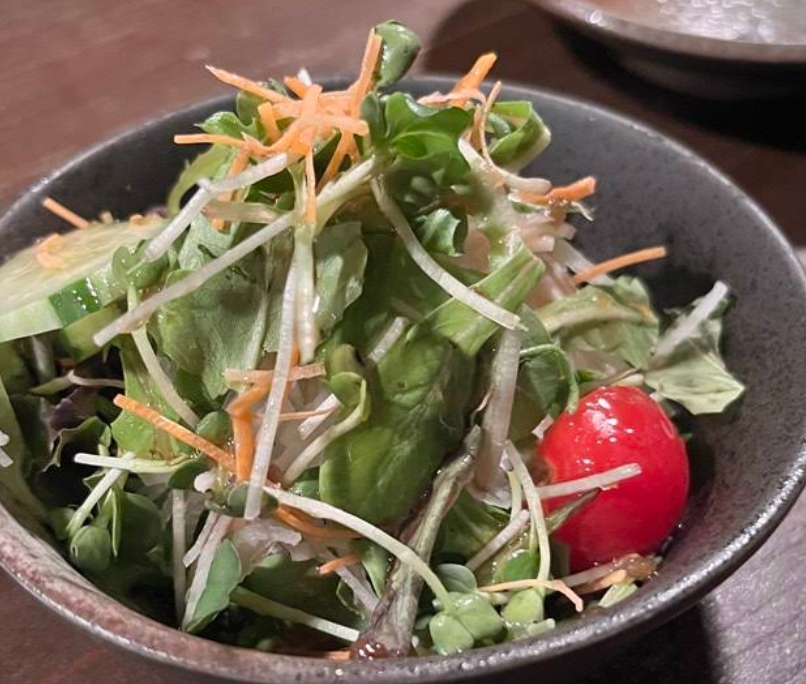
ISLAND GREENS & BAR
沖縄旬菜・泡盛とワイン
気まぐれサラダ・一品料理
ARTISAN SALAD & PAIRING
沖繩旬彩鮮蔬沙拉、手作島豆腐 ＆ 泡盛紅酒微醺
黑板菜單上的隱藏亮點！在品嚐濃郁和牛前，先以主廚特製「気まぐれ季節鮮蔬沙拉」、沖繩苦瓜沙拉、手工島豆腐與鹽漬島薤喚醒味蕾；店內更精選多款與和牛絕配的紅白酒及17款沖繩泡盛。
人氣前菜：主廚季節鮮蔬沙拉、手作豆腐、野菜棒 (各 ¥500~)
營業時間：17:00 – 02:00 (L.O. 01:30，深夜微醺首選)
LUXURY STAY ｜ NAHA KUMOJI
KUMOJI & KOKUSAI-DORI
沖縄県那覇市久茂地 2-6-16
那覇中心部・ラグジュアリー滞在
STAY & ACCESS
下榻那霸久茂地・國際通圈 ｜ 散步即達的微醺之夜
「神戸Bar 仲々」位於那霸市久茂地 2-6-16，距離單軌電車「縣廳前站」與「美榮橋站」步行僅約 5 分鐘。推薦下榻久茂地或國際通周邊星級飯店，免開車即可盡情享受紅酒與和牛饗宴。
地址：沖繩縣那霸市久茂地 2-6-16 ｜ MapCode: 33 156 298*41
交通：單軌縣廳前站步行 5 分鐘（鄰近多個投幣停車場）
行程規劃
AFTERNOON
那霸機場取車／市區漫遊 ➔ 瀨長島海景咖啡或浦添 PARCO CITY 海岸購物
午後自駕造訪小希臘瀨長島龍神之湯與海景露台，或前往浦添西海岸 PARCO CITY 飽覽果凍海景與日系選物店，傍晚返回那霸市區飯店辦理入住（或歸還租車）。
EVENING
漫步那霸久茂地靜巷 ➔ 「神戸Bar 仲々」神戶牛 × 石垣牛極上晚宴
18:30 推開「神戸Bar 仲々」暖簾入席。先以季節鮮蔬沙拉與沖繩小鉢開胃，接著鑑賞主廚呈上的 A5 神戶牛與特撰石垣牛原塊，品味五分熟鑄鐵牛排佐沖繩海鹽與現磨山葵的極致脂香。
LATE NIGHT
國際通微醺夜行 ➔ 下榻那霸市中心精品星級飯店
餐後散步 5 分鐘即可抵達國際通或福州園周邊，感受南國夜晚微風；由於「仲々」營業至凌晨 02:00，亦非常適合在逛完國際通後作為深夜第二攤的奢華牛排酒場。
The journal of Japanese cultural values
2026.11.04
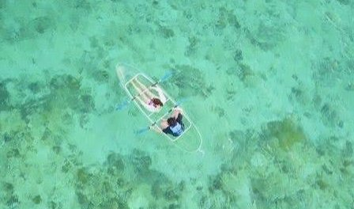
OKINAWA ROAD TRIP
沖縄本島・南北縦断
沖縄ドライブ完全攻略
OKINAWA SPECIAL
沖繩不繞路自駕攻略：20+ 頂級和牛燒肉、崖景咖啡與奢華度假村全圖鑑。
收錄全島 MapCode 導航、長輩親子不累動線、米其林百名店與海景度假村訂房分潤指南...
2026.04.24
KUMANO KODŌ
和歌山県田辺市・那智勝浦
熊野古道・甦りの聖地
PICK UP
熊野古道：千年朝聖古道、靈泉甦醒與神聖森林之霧。
踏上平安時代上皇赤足跋涉的「蟻之熊野詣」，探訪米其林二星 Villa AiDA 與湯之峰壺湯...
2026.04.18
MOUNT FUJI & MOTOSU
山梨県富士河口湖町
富士五湖・本栖湖
PICK UP
富士五湖與本栖湖：神聖逆富士、山野柴火與深山靜謐。
本栖湖如鏡水面映照著永恆對稱的逆富士，探訪虹夕諾雅富士露營木屋與甲州獵人法式野味割烹...
2026.11.04
RYUKYU KOBE BEEF
沖縄・恩納・北谷・那覇
炭火焼肉 琉球神戸牛・琉球の牛
NEW FEATURE
炭火燒肉 琉球神戶牛：預約限定「特製和牛玫瑰肉蛋糕」與A5霜降燒肉盛典。
為摯愛獻上綻放如紅玫瑰般的A5霜降和牛「特製肉蛋糕」，搭配海葡萄沙拉與慢燉和牛前菜...
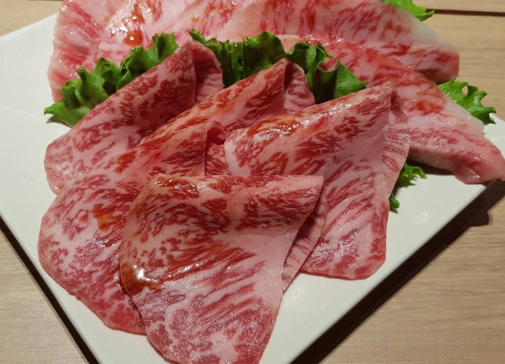
OKINAWA CELEBRATION YAKINIKU MASTERCLASS
炭火燒肉 琉球神戶牛：預約限定「特製和牛玫瑰肉蛋糕」與A5霜降燒肉盛典
「當油花如大理石般綻放的A5頂級黑毛和牛，化作燭光下盛開的緋紅玫瑰肉蛋糕——在沖繩海風與無煙炭火的溫柔包廂裡，為生日與紀念日鐫刻最難忘的奢華儀式感。」
The journal of Japanese cultural values
CHAPTER 01 ｜ OKINAWA YAKINIKU
炭火焼肉 琉球神戸牛・琉球の牛 ｜ 記念日を彩る極上和牛
沖繩縣恩納・北谷・那霸國際通 ｜ 頂級和牛燒肉殿堂。
Premier A5 Wagyu & Celebration Meat Cake in Okinawa.
沖繩燒肉界指標名門・超越產地銘牌的極致選肉哲學
不迷信單一產地標籤，只取當日最巔峰的 A5 霜降黑毛和牛
來到沖繩自駕旅行，如何為同行伴侶的生日、結婚週年紀念日或家族慶典，挑選一間兼具「頂級肉質」與「滿分儀式感」的燒肉名店？在恩納村、北谷美國村與那霸國際通皆一位難求的「炭火燒肉 琉球神戶牛／焼肉 琉球の牛」，正是無數老饕心目中的首選殿堂。
店內主廚團隊秉持「超越品牌迷思、以肉質定勝負」的嚴苛標準，每日從沖繩縣產黑毛和牛與日本神戶牛等頂級產區中，精挑細選出油花分布最勻稱、油脂熔點最低的 A5 等級特選部位。搭配高隱私感的半密閉式木質包廂與遠紅外線無煙烤爐，讓賓客在優雅無油煙的環境中，細細品味頂級和牛在舌尖化開的甘美脂香。
左圖：預約專用的「特製肉蛋糕」官方說明（¥3,200／含稅 ¥3,520）。右上：隨附水晶燭台與「Happy Anniversary / Happy Birthday」專屬祝賀卡片的 A5 霜降和牛玫瑰肉蛋糕實拍。
紀念日儀式感：預約專用「特製肉蛋糕」(Meat Cake)
以盛開的 A5 霜降和牛玫瑰，獻給最重要的日子
不愛甜膩奶油蛋糕的肉食控有福了！店內最具代表性的隱藏版驚喜——「預約專用 特製肉蛋糕」（¥3,200／含稅 ¥3,520），由職人以手工將一片片油花如大理石紋般細膩的頂級黑毛和牛薄切肉片，層層堆疊包覆成圓潤飽滿的蛋糕底座，頂端更捲成一朵嬌豔盛開的緋紅和牛玫瑰。上桌時不僅附上晶瑩剔透的水晶燭台與兩款秘製沾醬，更貼心立上印有「Happy Birthday」或「Happy Anniversary」的專屬花卉賀卡，拍照打卡視覺震撼度滿分！
CHAPTER 02 ｜ WAGYU STEW & SEA GRAPES SALAD
從濃郁慢燉和牛到「綠色魚子醬」海葡萄的味蕾序曲
一場完美的燒肉晚宴，從開胃前菜便展現出法式料理般的細膩層次。入席後率先登場的「主廚慢燉厚切和牛（Wagyu Beef Stew）」，以大量蔬菜與牛骨高湯歷時數十小時慢火熬煮出琥珀色濃郁醬汁，中央大塊厚切和牛燉至用筷子輕夾即化的極致酥軟，淋上一抹鮮奶油與細碎香草，醇厚脂香瞬間溫暖脾胃。
緊接著端上的「沖繩海葡萄鮮蔬沙拉」，在清脆爽口的鮮嫩生菜頂端，豪氣鋪滿享有「綠色魚子醬」美譽的沖繩產地直送海葡萄（海ぶどう）。逼波彈牙的海洋鹹香與微酸和風胡麻醬汁完美交融，不僅清爽開胃，更在品嚐豐潤的 A5 霜降牛五花與特選里肌之間，扮演最完美的解膩推手。
The journal of Japanese cultural values
RESERVATION ONLY ｜ ANNIVERSARY
SPECIAL MEAT CAKE
予約専用・特製肉ケーキ
誕生日・記念日のサプライズ
CELEBRATION EXCLUSIVE
預約專用「特製肉蛋糕」｜ 生日與紀念日驚喜首選
專為生日、求婚與結婚紀念日打造的限量驚喜！以頂級霜降和牛手工捲成玫瑰花束造型蛋糕，附贈水晶燭台與 Happy Birthday / Happy Anniversary 祝賀小卡，需於訂位時事先預約。
價格：¥3,200（含稅 ¥3,520）｜ 預約專用
預約秘訣：可於線上訂位備註欄註明慶祝字樣或洽詢店員
SIGNATURE WAGYU ｜ A5 MARBLING
PREMIUM A5 WAGYU
特選あぶり肉・霜降りカルビ
極上黒毛和牛盛り合わせ
MASTERCHEF SELECTION
特選 A5 霜降牛五花 ＆ 頂級冷藏和牛燒肉套餐
大理石般粉嫩雪白的頂級霜降油花，在無煙烤網上輕炙 3 至 5 秒即可翻面，微焦脂香混和特製水果甘口燒肉醬或檸檬汁，入口即化、肉汁滿溢。
人氣部位：特選霜降牛五花、炙燒薄切沙朗、厚切牛舌
分店據點：恩納本館、北谷美國村店、那霸國際通店
OKINAWA APPETIZER ｜ SEA GRAPES
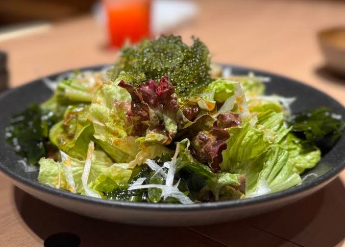
SEA GRAPES & STEW
沖縄県産海ぶどうサラダ
和牛ビーフシチュー前菜
COURSE PRELUDE
沖繩產海葡萄沙拉 ＆ 主廚慢燉和牛奢華前菜
套餐內含充滿沖繩海島風情的「海葡萄鮮蔬沙拉」與濃郁入味的「主廚慢燉厚切和牛」，搭配周邊海景度假村住宿，成就最完美的沖繩紀念日之旅。
推薦搭配：海葡萄和風沙拉、慢燉和牛、Orion 生啤酒
周邊住宿：恩納村海景度假村群／北谷美國村／國際通飯店
行程規劃
AFTERNOON
恩納村萬座毛／青之洞窟浮潛 ➔ 星野 Banta Cafe 崖景下午茶
午後自駕沿國道 58 號海岸線巡禮，體驗真榮田岬青之洞窟浮潛或於讀谷村星野 Banta Cafe 俯瞰珊瑚礁果凍海，傍晚前往北谷美國村欣賞落日海灘夕陽。
EVENING
入席「炭火燒肉 琉球神戶牛／琉球の牛」➔ 驚喜端出「特製和牛玫瑰肉蛋糕」
於預訂時段入座高隱私包廂，先品嚐慢燉厚切和牛與海葡萄沙拉，接著由店員端上點亮燭光的「預約專用 特製肉蛋糕」（¥3,520 含稅）與 A5 霜降和牛拼盤，共度難忘慶祝之夜。
NIGHT STAY
下榻恩納村／北谷美國村／那霸國際通奢華海景度假村
餐後返回鄰近的恩納村五星海景度假村（如哈雷庫拉尼、虹夕諾雅沖繩）或北谷海濱飯店，在海浪聲中延續紀念日微醺浪漫。
The journal of Japanese cultural values
2026.11.04
KOBE BAR NAKANAKA
沖縄県那覇市久茂地
神戸Bar 仲々・二大銘牛
OKINAWA WAGYU
神戶Bar 仲々：那霸久茂地暖簾後的A5神戶牛與石垣牛奢華雙重奏。
推開那霸久茂地靜巷裡的深色木門與「仲々」暖簾，一次品嚐血統證書A5神戶牛與特撰石垣牛夏多布里昂...
2026.11.04
OKINAWA ROAD TRIP
沖縄本島・南北縦断
沖縄ドライブ完全攻略
OKINAWA SPECIAL
沖繩不繞路自駕攻略：20+ 頂級和牛燒肉、崖景咖啡與奢華度假村全圖鑑。
收錄全島 MapCode 導航、長輩親子不累動線、米其林百名店與海景度假村訂房分潤指南...
2026.04.24
KUMANO KODŌ
和歌山県田辺市・那智勝浦
熊野古道・甦りの聖地
PICK UP
熊野古道：千年朝聖古道、靈泉甦醒與神聖森林之霧。
踏上平安時代上皇赤足跋涉的「蟻之熊野詣」，探訪米其林二星 Villa AiDA 與湯之峰壺湯...
2026.11.04
OKINAWA WAGYU BIBLE
沖縄本島・11大焼肉名店
石垣牛・もとぶ牛完全図鑑
FLAGSHIP GUIDE
沖繩石垣牛與和牛必吃美食之旅：歷史、部位烤法與 11 大名店預約全指南。
一次收錄琉球之牛、燒肉Motobu牧場、燒肉華、乃我那霸、敘敘苑、金城、Roins與NAKAMA必點菜單...
OKINAWA ISHIGAKI BEEF & WAGYU 11 GRAND MASTERS
沖繩石垣牛與和牛必吃美食之旅：傳奇身世、7大黃金部位烤法與 11 間殿堂名店預約全指南
「從 2000 年 G8 領袖高峰會驚豔世界的『石垣牛』、榮獲農林水產大臣賞的『本部牛』，到一席難求的沖繩 11 大燒肉聖殿——讀懂和牛部位、火候與預約秘訣，展開一場絕不踩雷的南島脂香巡禮。」
The journal of Japanese cultural values
CHAPTER 01 ｜ HISTORY OF ISHIGAKI BEEF
石垣牛と沖縄和牛の系譜 ｜ 峰会が認めた南国の至宝
八重山群島純血但馬牛系譜・沖繩三大銘柄和牛全解析。
The Heritage of Ishigaki Beef, Motobu Beef & Yanbaru Wagyu.
從日本名牛的搖籃到 G8 國宴巔峰・為什麼老饕都為它瘋狂？
石垣牛（常被語音暱稱為「十元牛」）的傳奇歷史與沖繩三大和牛身世
許多台灣旅人在搜尋沖繩美食時，常因語音輸入將「石垣牛（Shíyuán niú）」打成同音的「十元牛」——但這頭來自沖繩八重山群島的黑毛和牛，身價與美味程度可是堂堂正正的「日本國宴級至寶」！回溯歷史，石垣島因終年氣候溫暖溼潤、陽光充足，且牧草受珊瑚礁土壤與海風滋養而富含天然礦物質，早在數十年前便是日本本土「神戶牛」、「松阪牛」與「近江牛」最重要的優質小牛（素牛）培育基地。
真正讓石垣牛一戰成名的歷史轉捩點，發生於西元 2000 年的「九州・沖繩 G8 八大工業國領袖高峰會」。在首腦晚宴上，主辦方端出石垣島自家肥育超過 20 個月的頂級 A5 石垣牛沙朗牛排，美國總統柯林頓與各國元首品嚐後驚為天人、讚不絕口，自此「石垣牛」正式封神，成為旅人造訪沖繩必嚐的夢幻逸品。除了必須具備 JA 沖繩嚴格血統認證書的「石垣牛」外，沖繩本島北部的「本部牛（もとぶ牛，以 Orion 啤酒糟發酵熟料培育，曾勇奪日本農林水產大臣賞）」以及中北部的「山原黑毛和牛／伊江島和牛」，共同構築出沖繩傲視全日本的和牛黃金三角。
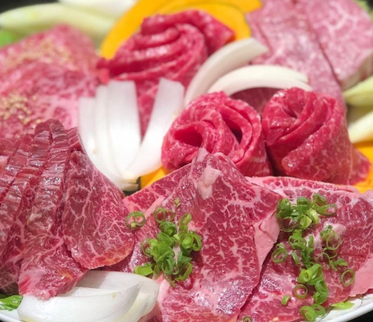
左圖：石垣牛各部位全牛拼盤，油花如大理石般細密。右上：將不同部位依油花比例分切盛盤的頂級冷藏黑毛和牛。
部位圖鑑：懂點這 7 個部位，才算真正吃懂日本和牛
從「夏多布里昂」到「厚切牛舌」：和牛 7 大黃金部位全解析
① 夏多布里昂／菲力（Chateaubriand / フィレ）：一頭牛僅佔 3% 的腰內最中心部位，完全無筋、零運動量，用筷子即可夾斷的極致絲滑。
② 沙朗（Sirloin / サーロイン）：大理石霜降最華麗的「牛肉之王」，炙烤後脂香如奶油般在口中爆發。
③ 特選牛五花（Kalbi / カルビ）：胸腹肋骨間肉，油花豐潤甘甜，搭配日本越光米白飯堪稱人間絕配。
④ 厚切牛舌根（Thick-Cut Tongue / 特上タン元）：只取牛舌最根部 30% 軟嫩核心，十字花刀炭烤後外脆內彈。
⑤ 板腱／三筋（Misuji / ミスジ）：肩胛內側帶有三道細緻葉脈油花的稀有部位，入口3秒瞬間化開。
⑥ 橫膈膜（Harami / ハラミ）：雖屬內臟系卻擁有比紅肉更濃郁的肉香，低脂多汁、久吃不膩。
⑦ 友三角＆臀肉蓋（Tri-Tip & Ichibo / トモサンカク・イチボ）：後腿與臀部極少量的霜降部位，兼具赤身肉旨味與柔嫩油花。
CHAPTER 02 ｜ THE ART OF GRILLING & TASTING
石垣牛與和牛怎麼吃才好吃？老饕私藏「黃金順序」與「3秒炙燒法則」
【法則一：品嚐順序「由淡入濃、由瘦入肥」】
千萬別一上桌就先烤油花最重的牛五花，否則味蕾會瞬間被油脂包覆而感到膩口！最完美的順序是：先從「① 鹽味厚切牛舌（佐新鮮檸檬汁）」喚醒味蕾 ➔ 接著品嚐「② 菲力、板腱或赤身里肌（原味佐沖繩海鹽與現磨山葵）」感受純粹肉香 ➔ 進入高潮「③ A5 特選沙朗、霜降牛五花或桌邊炙燒生牛肉蛋黃飯（佐秘傳水果甘口燒肉醬）」 ➔ 最後以「④ 橫膈膜、阿古豬五花與冷麵／牛尾湯」完美收尾。
【法則二：A5 霜降薄切「單面 3 秒、五分熟粉紅」鐵則】
正統石垣牛與 A5 黑毛和牛的不飽和脂肪酸熔點極低（僅約 25°C～28°C，甚至低於人體體溫）。薄切霜降肉片放上高溫炭網後，切忌反覆翻面！只需靜待朝上一面浮現晶瑩剔透的「肉汁小水珠」（約 3 至 5 秒），翻面輕烙 2 秒呈現粉嫩緋紅色（Medium Rare）即可夾起。第一口務必單沾「沖繩天然海鹽（島マース）」配一小撮「現磨山葵（Wasabi）」——山葵遇到豐富和牛油脂完全不會嗆鼻，反而能將石垣牛特有的清雅奶香與甘甜度瞬間放大三倍！
The journal of Japanese cultural values
NO. 01 ｜ ONNA VILLAGE
RYUKYU NO USHI — ONNA
沖縄県国頭郡恩納村前兼久
焼肉 琉球の牛 恩納本館
OKINAWA #1 POPULARITY
1. 琉球之牛 恩納本館
【店家特色】沖繩燒肉界人氣霸主！刻意不拘泥單一品牌標籤，由職人大師每日盲測挑選全沖繩油花最頂尖的 A5 黑毛和牛，全席採高隱私半包廂與遠紅外線無煙烤爐。
🍴 必吃推薦：特選炙燒薄切沙朗（配雞蛋沾醬）、頂級厚切牛舌、雙層油花牛五花
📅 怎麼預約：極度搶手！務必提前 30 天透過 Klook 或官網預訂晚餐套餐；若未訂到可於 16:30 前現場抽號碼牌。
📍 導航：MapCode 206 096 716*71（附免費停車場）
NO. 02 ｜ MOTOBU TOWN
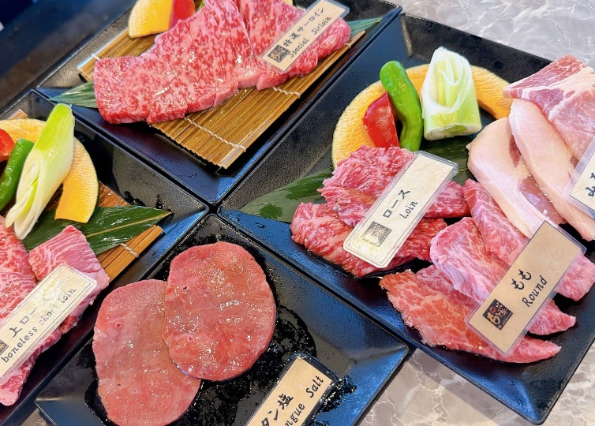
MOTOBU FARM — MOTOBU
沖縄県国頭郡本部町大浜
焼肉 もとぶ牧場 本部店
MINISTER AWARD WAGYU
2. 燒肉 Motobu 牧場 本部店
【店家特色】距離美麗海水族館僅 10 分鐘車程！自家牧場直營，以 Orion 啤酒糟發酵飼料培育出的「本部牛」曾勇奪日本農林水產大臣賞，肉質散發獨特清雅乳香與甘甜。
🍴 必吃推薦：本部牛特選燒肉拼盤、午間限定超值「本部牛排丼／燒肉定食」、本部牛臀肉蓋
📅 怎麼預約：推薦於 Klook 預訂精選套餐免排隊；中午時段自駕逛完水族館順遊最划算。
📍 導航：MapCode 206 856 434*22（大型免費停車場）
NO. 03 ｜ NAGO CITY
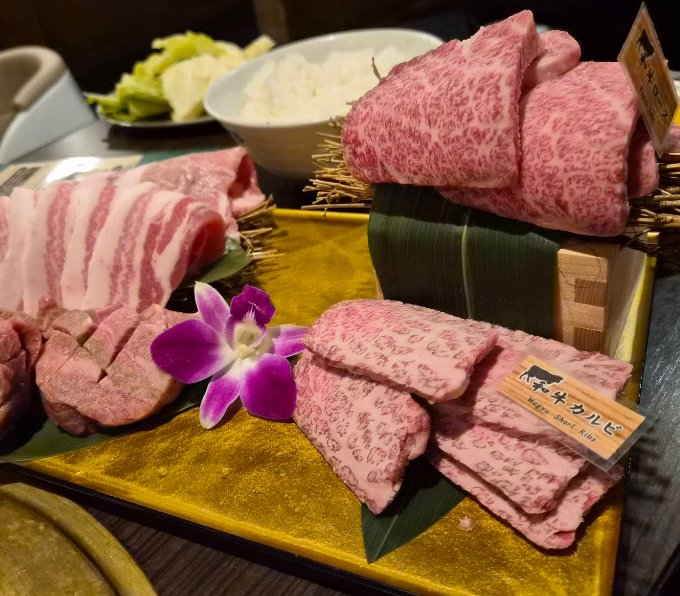
YAKINIKU GANAHA — NAGO
沖縄県名護市宮里
焼肉乃我那覇 新館
BUTCHER SHOP DIRECT
3. 燒肉乃我那霸 新館 (焼肉乃我覇)
【店家特色】名護市老字號精肉店直營！一樓就是自家肉舖，擁有整頭買入山原黑毛和牛與島豚阿古豬的絕對價格優勢，提供單點高階部位與超高 CP 值和牛吃到飽兩種方案。
🍴 必吃推薦：山原黑毛和牛五花階梯拼盤、自家牧場沖繩阿古豬五花、厚切牛舌與生菜沙拉吧
📅 怎麼預約：新館座位寬敞達百席，可透過 Klook 或電話預約；若現場候位建議避開 18:30–20:00 尖峰。
📍 導航：MapCode 206 687 132*41（50格免費停車場）
NO. 04 ｜ ONNA COAST
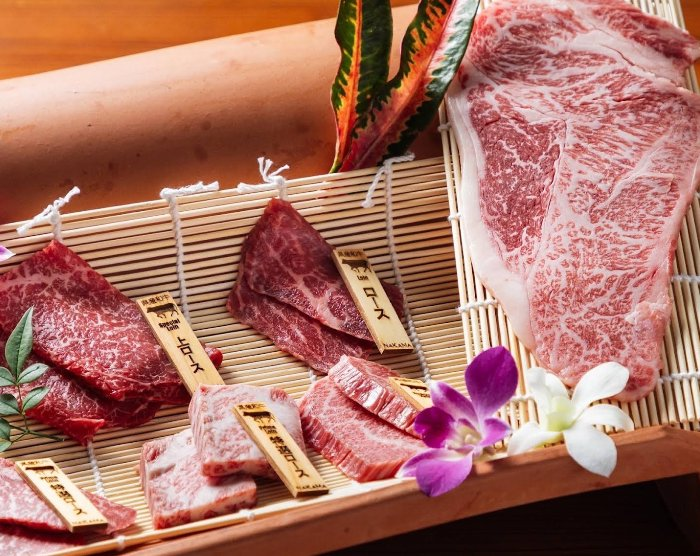
RYUKYU YAKINIKU NAKAMA
沖縄県国頭郡恩納村名嘉真
琉球焼肉 NAKAMA
ISHIGAKI & AGU PORK
4. 琉球燒肉 NAKAMA (恩納村店)
【店家特色】坐落恩納村 58 號海景飯店黃金地帶（鄰近哈雷庫拉尼與 Kariyushi），挑高木造空間氣派舒適，主打一次集結「石垣牛、沖繩黑毛和牛、島豚阿古豬」的海陸大拼盤。
🍴 必吃推薦：特選石垣牛竹簾階梯大拼盤（含上等里肌與特選牛五花）、阿古豬松阪肉、石垣牛握壽司
📅 怎麼預約：直接在 Klook 購買雙人或四人豪華電子餐券即可完成預約，比現場單點更優惠。
📍 導航：MapCode 206 381 452*33（店前免費停車場）
The journal of Japanese cultural values
NO. 05 ｜ ANNIVERSARY SPECIAL
RYUKYU KOBE BEEF
恩納・北谷・那覇国際通り
炭火焼肉 琉球神戸牛・肉ケーキ
BIRTHDAY & MEAT CAKE
5. 炭火燒肉 琉球神戶牛
【店家特色】專為慶生、求婚與結婚週年紀念日打造的夢幻名店！嚴選日本神戶牛與沖繩 A5 黑毛和牛，最大亮點是預約限定的「特製和牛玫瑰肉蛋糕（¥3,520 含稅）」，附贈水晶燭台與祝賀花卡。
🍴 必吃推薦：預約專用「特製肉蛋糕」、主廚慢燉厚切和牛前菜、沖繩海葡萄鮮蔬沙拉、特選霜降牛五花
📅 怎麼預約：需提前線上訂位並於備註欄預約「特製肉蛋糕（註明 Happy Birthday 或 Anniversary）」。
📍 專文：點此閱讀琉球神戶牛深度專文 ↗
NO. 06 ｜ URASOE PARCO CITY
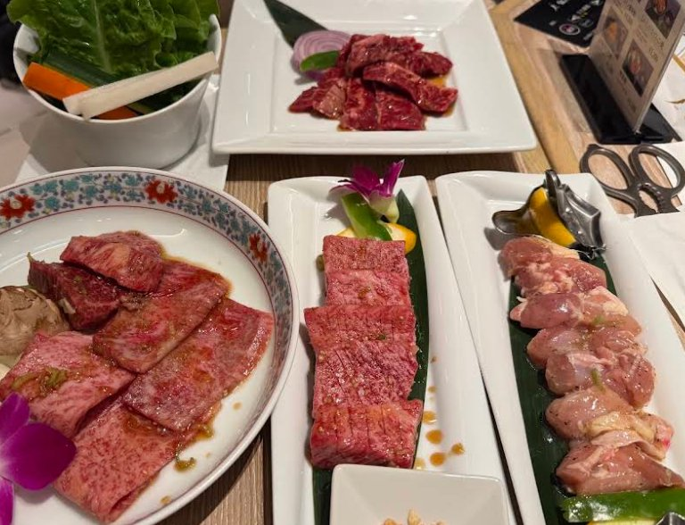
JOJOEN — PARCO CITY
沖縄県浦添市西洲 PARCO 3F
叙々苑 沖縄浦添パルコシティ店
OCEAN VIEW LUXURY
6. 敘敘苑 沖繩浦添 Parco City
【店家特色】日本頂級燒肉代名詞「敘敘苑」全沖繩唯一分店！位於浦添 PARCO CITY 三樓靠海側，擁有整排面對西海岸無敵果凍海與落日的雙人景觀包廂，服務細膩至極。
🍴 必吃推薦：高CP值「午間燒肉套餐（含招牌敘敘苑麻油生菜沙拉、和牛五花、湯品與甜點）」、蔥鹽牛舌
📅 怎麼預約：面海景觀席極度熱門，建議提前於官網或透過信用卡秘書／Klook 預訂 11:30 或 17:00 時段。
📍 導航：MapCode 33 308 838*82（商場 4000 格免費停車）
NO. 07 ｜ CHATAN TOWN
ISHIGAKI KINJO — CHATAN
沖縄県中頭郡北谷町北前
石垣牛 焼肉 金城 北谷本店
100% PURE ISHIGAKI BEEF
7. 石垣牛 燒肉 金城 北谷本店
【店家特色】真正的「石垣島自家牧場直營店」！在石垣島擁有專屬ゆいまーる牧場，只供應經過嚴格認證的 A4・A5 純血石垣牛，全席為傳統和室掘ごたつ（可伸腿榻榻米座），長輩小孩超舒適。
🍴 必吃推薦：石垣牛特選全牛階梯大拼盤、石垣牛菲力牛排、石垣牛稀有部位盛合（板腱、友三角）
📅 怎麼預約：可透過 Klook 預訂石垣牛套餐，店門口即有 25 個專屬免費車位，自駕極方便。
📍 導航：MapCode 33 525 320*44（美國村南側車程3分）
NO. 08 ｜ CHATAN ROUTE 58
YAKINIKU ROINS — CHATAN
沖縄県中頭郡北谷町伊平
焼肉ロインズ 北谷店
CHILLED RAW TONGUE & WAGYU
8. Roins 和牛燒肉 (焼肉ロインズ) 北谷店
【店家特色】中部年輕饕客與在地人最愛的時尚燒肉名所！堅持全程「零冷凍」冷藏空運鮮切黑毛和牛與生牛舌，由訓練有素的店員在桌邊為賓客掌握最佳炙燒秒數。
🍴 必吃推薦：專人桌邊炙燒「生牛肉松露蛋黃拌飯」、冷藏極厚切生牛舌、玫瑰造型A5和牛赤身拼盤
📅 怎麼預約：位於北谷國道 58 號旁，逛完美國村晚餐首選，建議提前於 Klook 或線上預訂 18:00 首輪。
📍 導航：MapCode 33 525 890*11（附專用免費停車場）
The journal of Japanese cultural values
NO. 09 ｜ NAHA KUMOJI
YAKINIKU HANA — NAHA
沖縄県那覇市松山・久茂地
焼肉 華 (Yakiniku Hana)
KLOOK #1 RESERVATION
9. 燒肉 華 (Yakiniku Hana)
【店家特色】那霸市區預約排行冠軍！最大魅力是能在一張餐桌上同時品嚐「石垣牛、本部牛、宮古牛」三大沖繩頂級銘柄牛與阿古豬，金色托盤擺盤極致華麗，下吸式無煙設備完善。
🍴 必吃推薦：特選石垣牛＆本部牛雙享套餐、木盒階梯霜降牛五花、厚切極上蔥鹽牛舌、石垣牛炙燒握壽司
📅 怎麼預約：Klook 獨家提供中文套餐即時預訂，單軌美榮橋站步行 5 分鐘即達。
📍 導航：MapCode 33 156 266*74（鄰近多個收費停車場）
NO. 10 ｜ NAHA KENCHOMAE
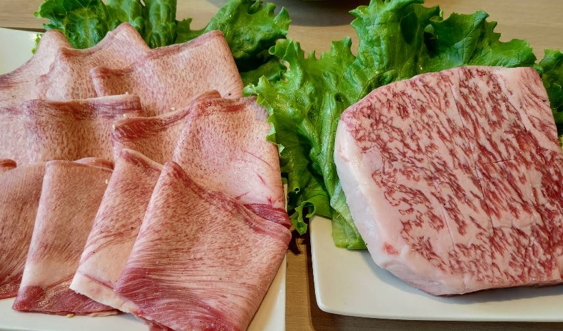
MOTOBU FARM — NAHA
沖縄県那覇市久茂地
焼肉 もとぶ牧場 那覇店
MINISTER AWARD IN NAHA
10. 燒肉 Motobu 牧場 那霸店
【店家特色】不必開遠車到北部本部町，在單軌電車「縣廳前站」步行 3 分鐘的久茂地就能吃到農林水產大臣賞冠軍「本部牛」！空間寬敞現代，非常適合還車後最後一晚全家聚餐。
🍴 必吃推薦：A5 本部牛稀有部位盛合（板腱、三角バラ）、本部牛夏多布里昂牛排、和牛壽喜燒風薄切
📅 怎麼預約：建議提前於 Klook 預訂那霸店專屬雙人／單人套餐，午餐時段亦有超值商業午餐。
📍 導航：MapCode 33 156 142*66（配合停車場消費折抵）
NO. 11 ｜ NAHA KOKUSAI-DORI
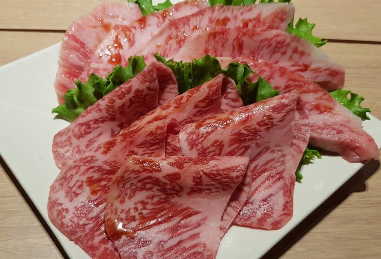
RYUKYU NO USHI — NAHA
沖縄県那覇市牧志 (国際通り)
焼肉 琉球の牛 那覇国際通り
KOKUSAI-DORI FLAGSHIP
11. 琉球之牛 那霸國際通店
【店家特色】坐落國際通核心地段大樓頂層，鬧中取靜的奢華個室包廂！若在恩納本館行程排不下，那霸國際通店提供完全同步的 A5 特選無銘牌頂級黑毛和牛套餐，逛完街直接搭電梯上樓開吃。
🍴 必吃推薦：特選 10 品頂級和牛全餐、炙燒薄切沙朗握壽司、厚切牛舌與阿古豬雙拼
📅 怎麼預約：國際通店一位難求，務必於出發前透過 Klook 搶訂席次（若客滿亦可考慮北谷美國村店）。
📍 導航：MapCode 33 157 552*18（單軌牧志站步行 4 分）
BONUS PICK ｜ NAHA & CHATAN
KOBE BAR NAKANAKA
那覇久茂地・北谷デポアイランド
神戸Bar 仲々 ＆ 琉球の牛北谷
LATE NIGHT STEAK BAR
同場加映：神戶Bar 仲々 ＆ 琉球之牛北谷店
想在深夜 22:00 後品嚐血統證書「A5 神戶牛 × 特撰石垣牛夏多布里昂」鐵板對比？推薦造訪那霸久茂地隱世酒場「神戸Bar 仲々」；而美國村「琉球之牛北谷店」則是午後免排隊秘境。
🍴 必吃推薦：特撰石垣牛菲力 × 神戶牛沙朗食べ比べ (100g~)
📖 深度閱讀：點擊下方按鈕立即閱讀《神戶Bar 仲々》完整專文介紹。
行程規劃
DAY 01 南部・浦添
那霸機場取車 ➔ 浦添 PARCO CITY「敘敘苑」海景午間燒肉 ➔ 那霸「燒肉 華／琉球之牛國際通／Motobu牧場那霸店」
抵達沖繩首日取車後，直奔浦添西海岸 PARCO CITY 三樓「敘敘苑」享用超高 CP 值海景午間套餐；傍晚入住那霸市區飯店，晚餐可任選「燒肉 華（石垣牛＋本部牛）」、「燒肉 Motobu 牧場那霸店」或「琉球之牛那霸國際通店」。
DAY 02 中部・恩納
北谷美國村「石垣牛金城／Roins和牛燒肉」➔ 恩納村海岸「琉球之牛恩納本館／琉球燒肉 NAKAMA／炭火燒肉 琉球神戶牛」
沿 58 號海景公路北上，於北谷町品嚐牧場直營「石垣牛金城」或「Roins 生切牛舌與炙燒和牛蛋黃飯」；晚間下榻恩納村五星海景度假村，預訂「琉球之牛恩納本館」、「琉球燒肉 NAKAMA」或「炭火燒肉 琉球神戶牛（特製玫瑰肉蛋糕慶生）」。
DAY 03 北部・本部
古宇利島透明獨木舟・美麗海水族館 ➔ 「燒肉 Motobu 牧場 本部店」➔ 名護「燒肉乃我那霸 新館」
北上暢遊古宇利大橋與美麗海水族館，中午於「燒肉 Motobu 牧場 本部店」大啖農林水產大臣賞本部牛；傍晚回程經過名護市，造訪精肉店直營「燒肉乃我那霸 新館」享用山原黑毛和牛與阿古豬盛合。
The journal of Japanese cultural values
2026.11.04
RYUKYU KOBE BEEF
沖縄・特製肉ケーキ
炭火焼肉 琉球神戸牛
OKINAWA WAGYU
炭火燒肉 琉球神戶牛：預約限定「特製和牛玫瑰肉蛋糕」與A5霜降燒肉盛典。
為摯愛獻上綻放如紅玫瑰般的A5霜降和牛「特製肉蛋糕」，搭配海葡萄沙拉與慢燉和牛前菜...
2026.11.04
KOBE BAR NAKANAKA
沖縄県那覇市久茂地
神戸Bar 仲々・二大銘牛
OKINAWA WAGYU
神戶Bar 仲々：那霸久茂地暖簾後的A5神戶牛與石垣牛奢華雙重奏。
推開那霸久茂地靜巷裡的深色木門與「仲々」暖簾，一次品嚐血統證書A5神戶牛與特撰石垣牛夏多布里昂...
2026.11.04
OKINAWA ROAD TRIP
沖縄本島・南北縦断
沖縄ドライブ完全攻略
OKINAWA SPECIAL
沖繩不繞路自駕攻略：20+ 頂級和牛燒肉、崖景咖啡與奢華度假村全圖鑑。
收錄全島 MapCode 導航、長輩親子不累動線、米其林百名店與海景度假村訂房分潤指南...
2026.04.24
KUMANO KODŌ
和歌山県田辺市・那智勝浦
熊野古道・甦りの聖地
PICK UP
熊野古道：千年朝聖古道、靈泉甦醒與神聖森林之霧。
踏上平安時代上皇赤足跋涉的「蟻之熊野詣」，探訪米其林二星 Villa AiDA 與湯之峰壺湯...